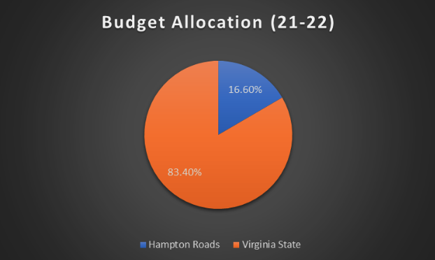
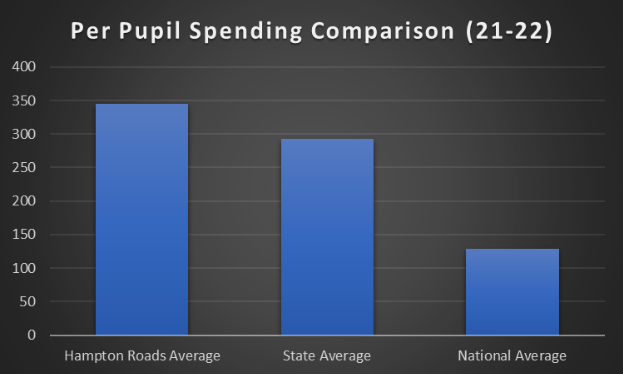

The Hampton Roads include the following counties: Chesapeake, Hampton, Newport News, Norfolk, Portsmouth, Suffolk, and Virginia Beach. Around 200,000 students are enrolled in public schools across the various counties in the Hampton Roads Region. With such a large amount of students, Hampton Roads allocates about 61 million dollars toward mental health services. These services include drug counseling, suicide prevention, and learning and behavior accommodations. Along with these services, students are frequently taught lessons in order to raise awareness. These lessons may include general health education, drug and alcohol education, and information about support programs.
The total number of students enrolled in public schools in Hampton Roads comes out to 207,898, equivalent to around 16% of the total number of students enrolled in public schools in Virginia. This number is reflected in the budget allocation for the Hampton Roads region. Although each county has its own budget allocated toward mental health services based on the student population, the Hampton Roads region is responsible for 16.6% of the total budget allocated to mental health services in the state.
As the pandemic peaked, the budget allocation toward mental health services generally increased for all the counties in the Hampton Roads region. Although each count has its own budget allocation toward mental health services, the general average per pupil spending in the Hampton Roads Region comes out to around $345. In comparison, the average per-pupil spending in Virginia is around $293 while the national average is around $129. The Hampton Roads have a great difference between the state and national average, especially after the pandemic.
